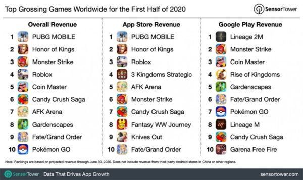

Apple มีรายได้จากเกมถึง 22,000 ล้านเหรียญ ในครึ่งปีแรก
SensorTower และ Statista บริษัทวิเคราะห์ข้อมูลสถิติ ได้รายงานข้อมูลล่าสุดว่า Apple ทำสถิติรายได้จากแอปประเภทเกมใน App Store ในช่วงครึ่งแรกของปี 2020 สูงถึง 22,200 ล้านเหรียญ ซึ่งสูงขึ้น 23% เมื่อเทียบกับช่วงครึ่งแรกเมื่อปี 2019 ที่ทำรายได้ในแอปประเภทเกมไป 18,100 ล้านเหรียญ
ทั้งนี้ เพียงแค่ช่วงเดือนเมษายน – มิถุนายน 2020 ที่ผ่านมา Apple มีรายได้ถึง 11,600 ล้านเหรียญ ในขณะที่ Play Store ของ Google มีรายได้อยู่ที่ 7,700 ล้านเหรียญ
เมื่อเทียบรายได้ในช่วงครึ่งแรกของปี 2020 แล้วนั้น ได้ระบุว่า Apple ทำรายได้ในแอปประเภทเกมสูงกว่าที่ Google ทำรายได้รวมกันใน Play Store ถึง 52% (Google ทำรายได้ไป 14,600 ล้านเหรียญ) แต่ Google มียอดดาวน์โหลดและติดตั้งเกมผ่าน Play Store สูงถึง 22,800 ล้านครั้ง ในขณะที่ Apple มียอดดาวน์โหลดอยู่ที่ 5,700 ล้านครั้ง
นอกจากนี้ SensorTower ยังได้เปิดเผยว่า เกม PUBG Mobile และ Honor of Kings ทำรายได้รวมกันสูงกว่า 1,000 ล้านเหรียญ ในช่วงครึ่งแรกของปี 2020 ส่วน Monster Strike ทำรายได้ไปประมาณ 632 ล้านเหรียญ
ชมภาพคอนเซ็ปต์ iPad Air 4 ดีไซน์คล้าย iPad Pro มาพร้อมชิป A14 และ USB-C

ปีนี้นอกจากเราจะได้เห็น iPhone 12 ไลน์อัปสมาร์ตโฟนประจำปี 2020 กันแล้ว เรายังอาจจะได้เห็นการอัปเกรดครั้งใหญ่ของ iPad Air ในรุ่นที่ 4 ที่อาจจะเปิดตัวพร้อมกันกับ iPhone 12 อีกด้วย
ตามข่าวลือจากหลายสื่อรายงาน iPad Air Gen 4 จะมาพร้อมกับชิป Apple A14 Bionic ตัวเดียวกับใน iPhone 12 มีดีไซน์แบบ Bezel-less ขอบจอบาง คล้ายกับดีไซน์ของ iPad Pro Gen 3 (2018) และยังจะหันไปใช้พอร์ต USB Type C ด้วยเช่นเดียวกัน แถมยังอาจจะได้เคส Magic Keyboard ตัวใหม่เช่นเดียวกับ iPad Pro 2020 ด้วย
ภาพด้านบนเป็นเรนเดอร์คอนเซ็ปต์ของ iPad Air Gen 4 ที่สร้างขึ้นมาตามข่าวลือ โดย @apple_idesigner ที่โดยรวมแล้วเหมือนเอา iPad Pro 2018 มายัดไสใหม่เลย (ฮา)
iPhone 12 เตรียมเปิดตัวช่วงปลายเดือนกันยายน หรืออาจจะเป็นช่วงต้นเดือนตุลาคมนี้ มาคอยติดตามกันครับว่าเราจะได้เห็น iPad Air Gen 4 กันด้วยไหม หรือต้องรอถึงปีหน้าเลยตามข่าวที่ว่าจะเปิดตัวในเดือนมีนาคม 2021
TikTok เตรียมฟ้องร้อง Donald Trump กรณีแบนแอปพลิเคชันในสหรัฐฯ

TikTok ยืนยันกับสื่อต่างประเทศว่าบริษัทจะฟ้องร้องประธานาธิบดี Donald Trump เรื่องคำสั่งแบนแอปพลิเคชันออกจากสหรัฐฯ อเมริกา โดย TikTok จะเริ่มการดำเนินการทางกฏหมายในสัปดาห์นี้
แถลงการณ์ของ TikTok ระบุว่า เพื่อความมั่นใจว่าเราจะไม่ถูกเมินจากกระบวนการทางยุติธรรม และผู้ใช้งานของเราจะได้รับการปฏิบัติอย่างเป็นธรรม เท่าเทียม เราไม่มีทางเลือกอื่นนอกจากท้าทายอำนาจคำสั่งที่ออกมาผ่านระบบกฏหมายหรือการพิจารณาทางคดีความ
เราไม่เห็นด้วยอย่างยิ่งต่อข้อกังวลของรัฐบาลสหรัฐฯ เรื่องความปลอดภัย เกือบปีแล้วที่เราพยายามแก้ปัญหาเรื่องความเชื่อมั่นด้วยวิธีที่สร้างสรรค์ แต่สิ่งที่เราพบคือมันไม่มีกระบวนการที่เหมาะสม แถมรัฐบาลไม่ยอมรับข้อเท็จจริง และยังแทรกแซงการเจรจาธุรกิจอีกด้วย
แถลงการณ์ของ TikTokย้อนกลับไปเมื่อวันที่ 6 สิงหาคมที่ผ่านมา ประธานาธิบดี Donald Trump ได้ประกาศแบน TikTok ห้ามบริษัทเครือสหรัฐฯ ทำธุรกิจกับ TikTok ทุกกรณี โดยจะมีผลใน 45 วันหลังออกคำสั่ง เว้นแต่ว่า ByteDance จะยอมขายธุรกิจ TikTok ให้เป็นของบริษัทสหรัฐฯ ดำเนินการแทนซึ่งตอนนี้ความเป็นไปได้มากที่สุดอยู่ที่ Microsoft โดย Trump และผู้บริหารระดับสูงให้เหตุผลในการแบนในประเด็นความกังวลด้านความปลอดภัยว่า TikTok จะเก็บข้อมูลของชาวอเมริกันและส่งกลับไปยังรัฐบาลจีน
หากการแบนเป็นผลสำเร็จ นั่นหมายความว่า Apple และ Google จะไม่สามารถเปิดให้ผู้ใช้งานดาวนฺโหลดแอป TikTok จากทั้ง App Store และ Play Store ในสหรัฐอเมริกาได้อีกต่อไป คล้าย ๆ กับกรณีที่รัฐบาลสั่งแบน Huawei
ซัมซุงรุกตลาดอีสปอร์ต ปั้นซับแบรนด์ Odyssey ตอกย้ำผู้นำอันดับหนึ่งเกมมิ่งมอนิเตอร์ระดับโลก
ซัมซุง ผู้นำอันดับหนึ่งของโลกในตลาดเกมมิ่งมอนิเตอร์ปี 2019 เปิดตัวซับแบรนด์ Odyssey (โอดิสซี) รุกตลาดเกมเต็มตัว พร้อมส่ง Odyssey G9 (โอดิสซี จี 9) สุดยอดนวัตกรรมจอโค้ง 1000R ที่ใหญ่ที่สุดในโลกขนาด 49 นิ้ว โดดเด่นด้วยดีไซน์แบบ Futuristic การันตีด้วยรางวัล CES Innovation Awards ปี 2020 และรุ่นน้องอย่าง Odyssey G7 (โอดิสซี จี 7) จอเกมสำหรับเกมเมอร์ตัวจริง
พร้อมติดอาวุธให้บรรดาคอเกมชาวไทยได้สัมผัสสุดยอดประสบการณ์เกมมิ่งที่ดียิ่งขึ้น ทั้งนี้ ซัมซุงตั้งเป้าเป็นผู้นำตลาดเกมมิ่งมอนิเตอร์ในประเทศไทย ด้วยการผลักดันเทรนด์จอเกมแบบโค้ง ซึ่งกำลังได้รับความนิยมเป็นอย่างมากในวงการอีสปอร์ตระดับโลก
นายเฉลิมพงษ์ ดรงค์สุวรรณ รองประธาน ธุรกิจเครื่องใช้ไฟฟ้า บริษัท ไทยซัมซุง อิเลคโทรนิคส์ จำกัด กล่าวว่า “อุตสาหกรรมอีสปอร์ตทั่วโลกกำลังเติบโตเป็นอย่างมาก โดยเฉพาะในช่วงการล็อคดาวน์และทุกคนใช้เวลาอยู่บ้านมากขึ้น ทำให้มูลค่าตลาดเกมเพิ่มสูงขึ้นแบบก้าวกระโดด
โดยคาดการณ์ว่าจะสูงถึง 1.59 แสนล้านดอลลาร์สหรัฐ (ประมาณ 5 ล้านล้านบาท) ซึ่งมีมูลค่ามากกว่าอุตสาหกรรมภาพยนตร์และดนตรีหลายเท่าตัว ซัมซุงในฐานะผู้นำนวัตกรรมและเทคโนโลยีระดับโลก ได้มีส่วนในการผลักดันอุตสาหกรรมนี้ด้วยการพัฒนาดีไวซ์ที่มีคุณภาพ ทั้งสมาร์ทโฟน ทีวี และโดยเฉพาะจอมอนิเตอร์ ซึ่งในปี 2019 ซัมซุงครองส่วนแบ่งตลาดเกมมิ่งมอนิเตอร์เป็นอันดับหนึ่งของโลก
การเปิดตัวซับแบรนด์ Odyssey ในปีนี้ เพื่อทำตลาดผลิตภัณฑ์ในกลุ่มเกมมิ่ง เป็นกลยุทธ์หนึ่งที่จะต่อยอดความสำเร็จด้วยการก้าวขึ้นเป็นแบรนด์ Top of Mind สำหรับนักเล่นเกมทั่วโลก และเป็นส่วนสำคัญในการผลักดันตลาดเกมและมอนิเตอร์ให้คึกคักยิ่งขึ้น”
นายสันติ โหลทอง นายกสมาคมกีฬาอีสปอร์ตแห่งประเทศไทย กล่าวว่า “รู้สึกยินดีเป็นอย่างยิ่งที่แบรนด์เทคโนโลยีชั้นนำระดับโลกอย่างซัมซุงได้เข้ามาสร้างสีสันและพัฒนาวงการอีสปอร์ตอย่างจริงจัง ด้วยการนำเสนออุปกรณ์ที่มีความสำคัญอย่างมากสำหรับเกมเมอร์มืออาชีพ นั่นก็คือเกมมิ่งมอนิเตอร์ซึ่งใช้เทคโนโลยีที่ดีที่สุดเพื่อช่วยยกระดับความสามารถของผู้เล่น และยังเป็นนวัตกรรมที่ได้รับรางวัลระดับโลก รวมถึงแผนการสนับสนุนนักกีฬาอีสปอร์ตไทยให้มีความสามารถทัดเทียมผู้เล่นบนเวทีโลก”
นางจีรภา คงสว่างวงศา ผู้อำนวยการ ผลิตภัณฑ์จอภาพเพื่อธุรกิจองค์กร บริษัท ไทยซัมซุง อิเลคโทรนิคส์ จำกัด กล่าวว่า “ซัมซุงเป็นผู้นำธุรกิจจอภาพในประเทศไทยมาอย่างยาวนาน ทั้งในด้านนวัตกรรมและส่วนแบ่งการตลาด สำหรับตลาดจอมอนิเตอร์ เราเป็นแบรนด์ที่นำเทรนด์จอโค้งและเป็นอันดับหนึ่งในตลาดมาอย่างต่อเนื่อง 5 ปี ตั้งแต่เริ่มทำตลาดในปี 2015
สำหรับในปีนี้เรายังคงผลักดันจอโค้ง (Curved Monitor) โดยเฉพาะสำหรับกลุ่มเกมมิ่ง (Curved Gaming Monitor) ซึ่งในปัจจุบันมีสัดส่วนอยู่เกินครึ่ง (56%) เมื่อเทียบกับจอแบน (Flat Gaming Monitor) นอกจากการเปิดตัวซับแบรนด์สำหรับทำตลาดเกมมิ่งโดยเฉพาะแล้ว เรายังเพิ่มไลน์อัพสินค้าในเซกเมนต์พรีเมียม อย่าง Odyssey G9 และ G7 ซึ่งจะช่วยผลักดันความสำเร็จสู่เป้าหมายผู้นำในตลาดเกมมิ่งมอนิเตอร์ไทยภายในปีนี้”
Odyssey G9 สุดยอดจอเกมมิ่งแบบโค้ง 1000R ที่ใหญ่ที่สุดในโลกขนาด 49 นิ้ว และการนำเสนอด้วยดีไซน์แห่งอนาคต จนได้รับรางวัลสุดยอดนวัตกรรม CES Innovation Awards ปี 2020 ไม่เพียงเท่านี้ Odyssey G9 ยังรวมเอาที่สุดแห่งเทคโนโลยีจอภาพที่เกมเมอร์ทุกคนต้องการมารวมไว้ในเครื่องเดียวกัน
โอบล้อมดวงตาทุกทิศทาง ทำทุกอย่างได้พร้อมกัน
Odyssey G9 มาพร้อมความโค้งแบบปฏิวัติวงการระดับ 1000R เท่ากับความโค้งของดวงตามนุษย์ และเป็นเทคโนโลยีล่าสุดแห่งวงการจอโค้งช่วยเสริมความเสมือนจริงในการรับชม ให้คุณสามารถมองเห็นได้รอบทิศทางแบบไม่ต้องหันไปมา และรองรับกับสายตาของมนุษย์ได้เป็นอย่างดี และยังได้รับการรับรองจาก TüV Rheinland ด้านการลดความเมื่อยล้าของดวงตาอีกด้วย
นอกจากนี้ Odyssey G9 ยังมาพร้อมอัตราส่วนภาพ 32:9 จอโค้ง Super Ultra-wide ขนาด 49 นิ้ว แบ่งได้หลายหน้าจอในเวลาเดียวกัน สูงสุดถึง 6 หน้าจอ เสริมความดื่มด่ำของเกมได้เพราะสามารถแสดง Map และ Item Menu โดยไม่ขัดจังหวะการเล่นเกม และหน้าจอแบบ Super Ultra-wide ยังช่วยให้สามารถทำงาน ชมภาพยนตร์ แชทคุยกับเพื่อน และฟังเพลงออนไลน์ได้พร้อมกันโดยไม่ต้องสลับหน้าต่างไปมา แถมยังสามารถวางตำแหน่งหน้าต่างแต่ละบานได้แบบตามใจชอบ
ความละเอียดที่ต้องมนตร์สะกดรับชมได้อย่างเหนือชั้นกว่าใครด้วยความละเอียดที่มีชีวิตชีวาจากอานุภาพความสว่างและสีกับเงาอันสมจริงของ เทคโนโลยี QLED ที่ทำให้คุณได้เพลิดเพลินไปกับฉากเกมอันน่าทึ่งได้ด้วยความแม่นยำในทุกรายละเอียด ให้ภาพนั้นดูสมจริงยิ่งกว่าเดิมด้วย HDR1000 ที่ทำให้บริเวณมืดๆ นั้นมืดสนิทและเสริมความเจิดจ้าให้กับบริเวณสว่าง
ซึ่งทำให้คุณได้สัมผัสกับคอนทราสต์ที่มีมิติยิ่งกว่าเดิม ส่วน HDR10+ จะช่วยปรับความสว่างและคอนทราสต์ในฉากต่าง ๆ ให้เป็นไปตามที่ผู้พัฒนาเกมตั้งใจให้คุณได้รับชม คุณจึงสามารถรับชมความน่าทึ่งและความสมจริงได้อย่างที่ไม่เคยมีมาก่อนไปพร้อมๆ กัน การแสดงผล Dual QHD ทำให้จินตนาการในโลกแห่งเกมของคุณกลายเป็นความจริง ความละเอียด DQHD ขนาด 49 นิ้วมอบการแสดงผลที่กว้างสุดๆ เหมือนกับการนำเอาหน้าจอ QHD สองหน้าจอที่คมชัดและอัดแน่นไปด้วยรายละเอียดมาวางต่อกัน สัมผัสกับมุมมองการรับชมที่ครอบคลุมกว่าเดิมด้วยพื้นที่การแสดงผลแบบจัดเต็มสำหรับทุกความมัน
ตัวจริงของจอเกม อาวุธลับของผู้ชนะจอเกมมิ่ง Odyssey G9 ถูกสร้างมาเพื่อคว้าชัยชนะ อัดแน่นด้วยขุมพลังให้คุณเหนือกว่าคู่แข่งด้วยนวัตกรรมอัตราการรีเฟรชระดับ 240Hz มองเห็นทุกเอฟเฟ็คและการเคลื่อนไหวอย่างรวดเร็ว และต่อเนื่องไร้อาการกระตุกยิ่งกว่าด้วยอัตราการตอบสนอง (Response Time) ที่รวดเร็วถึง 1ms หรือเพียง 0.001 วินาที ที่ได้รับความนิยมอย่างแพร่หลายในหมู่เกมเมอร์ FPS (first-person shooter) มืออาชีพ และเหล่านักกีฬาอีสปอร์ต
ใช้ง่าย และจัดบรรยากาศห้องเกมได้ด้วยแสงไฟ Infinity Core กว่า 52 เฉดสีนวัตกรรมเกมมิ่งมอนิเตอร์ Odyssey ไม่ได้หยุดเพียงความโค้งแบบเต็มอารมณ์เท่านั้น แต่ยังมาในดีไซน์สีขาวสะอาดตา รูปแบบล้ำสมัยเหมือนอุปกรณ์จากอนาคตในหนังไซไฟ ที่คว้ารางวัล CES Innovation Awards 2020 ในกลุ่ม Computer Peripherals และกลุ่ม Accessories category มาพร้อมแสงไฟ Infinity Core ปรับแสงสีได้กว่า 52 เฉดสี และ 5 รูปแบบการแสดงแสงสี ไม่ว่าจะเป็นการแสดงสีเดียวที่คุณชื่นชอบ หรือสลับแสงไปมาช่วยเพิ่มความตื่นเต้นให้บรรยากาศการเล่นเกม
ใช้งานได้อย่างสะดวกสบาย เพราะถูกออกแบบมาโดยคำนึงถึงสรีระของผู้ใช้ ทำให้สามารถหมุน เอียง และปรับความสูงได้ตามใจชอบ ส่งเสริมลักษณะการนั่งอย่างถูกต้อง ลดความเมื่อยล้าและส่งเสริมสุขภาพการใช้งานคอมพิวเตอร์ระยะยาวที่ดีกว่า นอกจากนี้หน้าจอเกมมิ่งยังมาพร้อมพอร์ตหลายแบบที่ช่วยให้คุณเชื่อมต่ออุปกรณ์โปรดต่างๆ เข้ากับหน้าจอได้อย่างง่ายดายด้วย
Odyssey G7 จอเกมสำหรับเกมเมอร์ตัวจริง
นอกจากความมหัศจรรย์แห่งสุดยอดเทคโนโลยีและการออกแบบที่ได้รวมอยู่ใน Odyssey G9 แล้ว สำหรับนักเล่นเกมตัวจริงที่กำลังมองหาจอเกมที่มีสเปคครบครันไม่ต่างกัน ในขนาดที่เล็กลง Odyssey G7 คือคำตอบของคุณ ด้วยตัวเลือกขนาด 27 นิ้วและ 32 นิ้ว มาพร้อมเทคโนโลยีระดับเดียวกันทั้ง Curved 1000R, QLED, อัตราการรีเฟรชระดับ 240Hz, อัตราการตอบสนองที่ 1ms และ HDR600